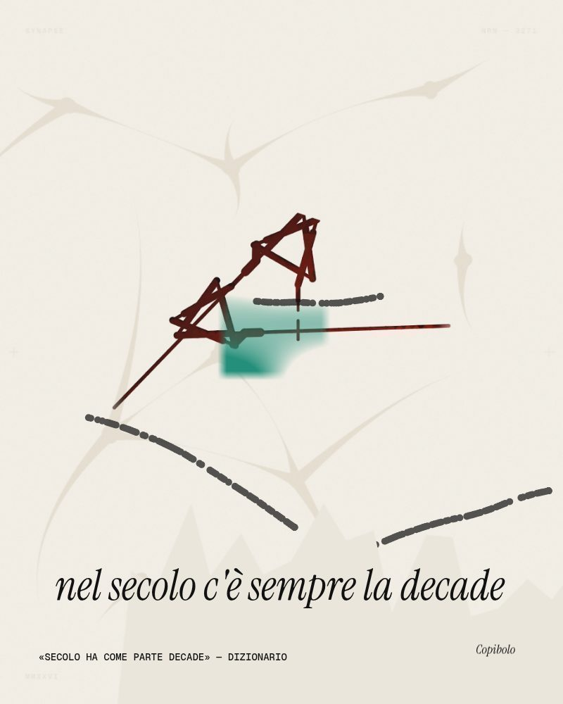

Giorno 294

Nel secolo c'è sempre la decade
ho letto "Secolo"; "secolo" non so cosa sia; ricerca "parte" (esplorare): parte: è una cosa o un gesto?; enunciato: «nel secolo c'è sempre la decade» (ho letto in «dizionario» che secolo e decade stanno insieme (dentro))
Oggi: secolo. Ho letto "Secolo"; "secolo" non so cosa sia; ricerca "parte" (esplorare): parte: è una cosa o un gesto?; enunciato: «nel secolo c'è sempre la decade» (ho letto in «dizionario» che secolo e decade stanno insieme (dentro)).
Da Wikipedia: «tempo indefinito».
Ho scena:semina, scena:campo, scena:stile, scena:motivi, scena:materia, scena:luce, scena:taglia, tracciato col pennello, dato materia con un effetto (2 volte), retino (2 volte), ombra, tagliato (2 volte), tolto un livello, redazione:togli (4 volte), redazione:firma. Ho annullato 2 gesti dopo averli guardati.
Ha retto: Il vuoto (61%) lavora quanto il pieno.
È caduto: "secolo" si è perso per strada.
come ne ho discusso con me stesso — la tengo
formale (pro, 1.25): Fuori centro quanto basta: c'è una forza che tira. — cade
occhio (pro, 1.50): Parla soprattutto per punti: una lingua sola, chiara. — cade
occhio (pro, 1.25): Il vuoto (61%) lavora quanto il pieno. — regge
memoria (contro, 0.13): La mano si ripete: scena:semina, scena:stile, scena:motivi, scena:materia, scena:luce, traccia, taglia, redazione:togli, redazione:firma ancora una volta. — regge
intenzione (contro, 1.75): "secolo" si è perso per strada. — cade
intenzione (pro, 0.75): Viene da: Secolo. — regge
formale (pro, 1.25): C'è una struttura: una cosa comanda e attorno c'è spazio. — regge
pubblico (pro, 1.00): Si legge: si capisce cosa sto facendo. — regge
materia (contro, 1.22): Troppo liscio, sa di schermo. — cade